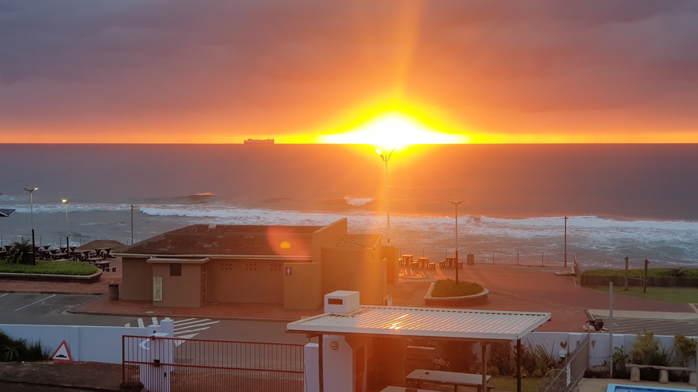

Running or cheering at the Boxer Super Run on Sunday 18 October? The key to a good morning is sorting your race pack, wave and route before the beachfront fills up.

Know the start and finish before race day
The start is on Snell Parade near Blue Lagoon, while the finish is at Blue Lagoon Park. That difference matters if someone is dropping you off or coming to watch. Agree on a place to meet after the race, away from the busy finish area if possible.
Our view is that a meeting point is worth more than a tight timetable. A runner and supporter can move at different speeds, and phone messages are easy to miss in a crowd.
Check which wave is yours
Boxer's event notice lists the open 5km wave at 07:00. Super Social waves run from 08:00 to 09:30. Elite women start at 09:45, elite men at 10:00, and the 1km kids' race at 10:30. Those later starts do not mean every runner can arrive late.
Check the wave on your own entry details. If you are watching, choose whose start or finish you want to see. That will guide when you travel, where you wait and how much of the morning to keep free.
Collect your race pack in advance
Durban Tourism lists race-pack collection at Blue Lagoon Park on 16 October from 09:00 to 17:00 and on 17 October from 09:00 to 14:00. Check the organiser's latest instructions for what to bring and whether your pack is ready.
Do not treat collection as a race-morning task. If you are staying on the Bluff, the day-before trip can also help you see the area and sort your route. We think that is a better use of time than learning the layout while the race is starting.
Expect closures along the beachfront
KZN Athletics reported temporary closures and lane restrictions for 18 October. They affect Snell Parade, parts of Battery Beach Road and the southbound side of Masabalala Yengwa Avenue near Moses Mabhida Stadium.
Preparations start from 03:00, and the route is expected to be clear by 12:30. These are event plans, not a promise that every road opens at one exact minute. Check live road notices on Sunday and follow Metro Police or marshal directions.
Build the trip around access, not distance
Driving from the Bluff or using a booked ride may both work, but the closest road to the start could be restricted. Check an allowed drop-off or parking area before you set off. Do not tell a driver to use a closed street.
Save the 4Shore Guesthouse address for your return and keep your phone charged. Our Durban transport guide explains the wider car, ride and shuttle choice.
Pack for the run, not for a full beach day
Keep your race number and timing chip with your running kit. Wear the shoes you plan to use, bring what you need for sun protection and check the event rules on bags and personal items.
For supporters, water, a hat and a clear meeting plan matter more than carrying too much. If your group includes young children, remember that the 5km has a minimum entrant age of nine. The separate kids' race has its own rules, so confirm those directly.
Make room for the morning after
Once the race is over, you may want breakfast, a break or a return to the Bluff. Keep the next activity open until everyone is finished. Some will want to stay for the event atmosphere; others will be ready to leave.
We like the idea of making the race the main outing and saving a slower beach stop for later. For other low-pressure ideas near your base, see things to do near the Bluff.
FAQ: Boxer Super Run from the Bluff
When is the 2026 Durban Boxer Super Run?
Sunday 18 October 2026. Check the organiser's page for any last-minute changes.
Where should I go for the 5km start?
The organiser lists Snell Parade near Blue Lagoon Park as the start and Blue Lagoon Park as the finish. Plan your drop-off and meeting points around road access.
Can I collect my race pack on Saturday?
Durban Tourism lists Saturday 17 October collection at Blue Lagoon Park from 09:00 to 14:00. Confirm the latest collection rules first.
Will roads be closed near the route?
Yes. KZN Athletics announced restrictions on parts of Snell Parade, Battery Beach Road and Masabalala Yengwa Avenue. Check live information before travelling.
Staying on the Bluff for race weekend?
Winston is the owner and host of 4Shore Guesthouse and the person guests can contact directly about rooms, rates, availability and practical questions. The guesthouse is at 28 Foreshore Drive, Ocean View, Bluff, Durban, KwaZulu-Natal, 4052. Call +27 83 254 4825 or email 4shoredurban@gmail.com.